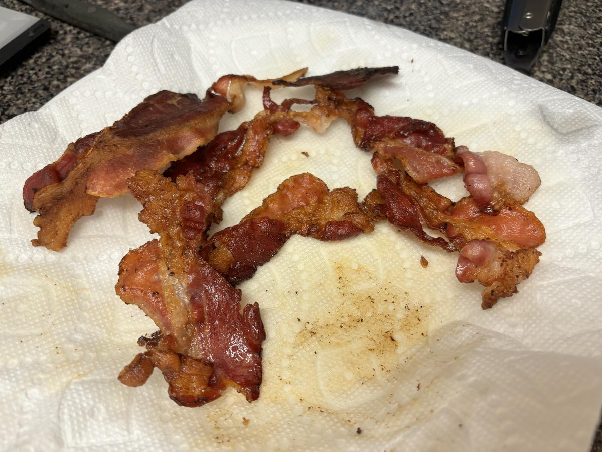

Based on https://www.cookwell.com/recipe/blt and https://fieldcompany.com/blogs/journal/how-to-cook-bacon-in-a-cast-iron-skillet
Personal rating: 5 / 5

2 slices/sandwich bacon (look for no sugar added)
Sandwich bread
Tomato
Romaine lettuce, thinly sliced
Mayonnaise, spoonful
Pickled Onions
Vinegar, splash
Salt and pepper